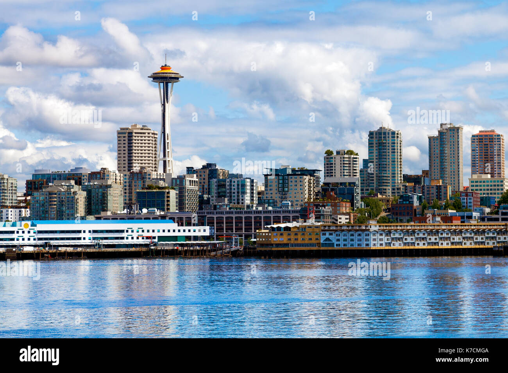

Travel Locations
Seattle, Washington

Seattle, chief city of the state of Washington, U.S., seat (1853) of King county, the largest metropolis of the Pacific Northwest, and one of the largest and most affluent urban centres in the United States. A major port of entry and an air and sea gateway to Asia and Alaska, Seattle lies alongside Puget Sound, a deep inland arm of the northern Pacific Ocean, and is at the centre of a conurbation that is defined roughly by Everett to the north, Bellevue to the east, and Tacoma to the south.
The city was settled on November 13, 1851, at what is now West Seattle. It was relocated the following year to a site across Elliott Bay near a Duwamish Indian village. It owes its name to the Native American leader Seattle, chief of the Duwamish, Suquamish, and other tribes of the Puget Sound area. Areas of great natural beauty, including the densely forested Olympic Peninsula and the Cascade Range, surround the city. Its urban centre, dominated by tall skyscrapers that overlook Elliott Bay and enhanced by the city’s abundant parks and neighbourhoods, also offers a handsome prospect.
Photo Gallery
New York, New York

New York City, often dubbed the "City that Never Sleeps," is a bustling metropolis like no other. Its iconic skyline, dominated by towering skyscrapers like the Empire State Building and One World Trade Center, symbolizes its ceaseless ambition and innovation. The city's cultural diversity is a defining feature, with neighborhoods like Chinatown, Little Italy, and Harlem offering a rich tapestry of traditions and flavors. From the bright lights of Times Square to the tranquility of Central Park, New York City offers a striking blend of urban excitement and natural beauty. It's a place where world-class museums, theaters, and restaurants cater to a global audience, making it a beacon for culture and creativity.
Beyond the surface, New York City's subway system and iconic yellow taxis make it remarkably accessible, allowing residents and visitors alike to explore its diverse offerings. This city is a stage for dreams to be pursued, a canvas for artistry to flourish, and a relentless engine of progress. It's a place where the past meets the future, and where every corner seems to tell a unique story, making New York City an irresistible destination for those seeking inspiration and adventure.
Photo Gallery


Grand Canyon

The Grand Canyon is a breathtaking natural wonder located in Arizona, USA, carved by the Colorado River over millions of years. Stretching over 277 miles long, up to 18 miles wide, and over a mile deep, this iconic landmark showcases intricate layers of rock that tell a complex geological history. Its monumental scale and intricate and colorful landscape offer some of the most overwhelming vistas in the world.
Visitors from around the globe flock to the Grand Canyon National Park to witness its grandeur. Whether they experience it by hiking its numerous trails, rafting in the Colorado River, or simply observing from one of the many overlooks, the Grand Canyon offers an unparalleled experience of awe and wonder. Its overwhelming size and intricate and colorful landscape offer a unique spectacle unsurpassed in its ability to illustrate the sheer power of natural forces.
Photo Gallery